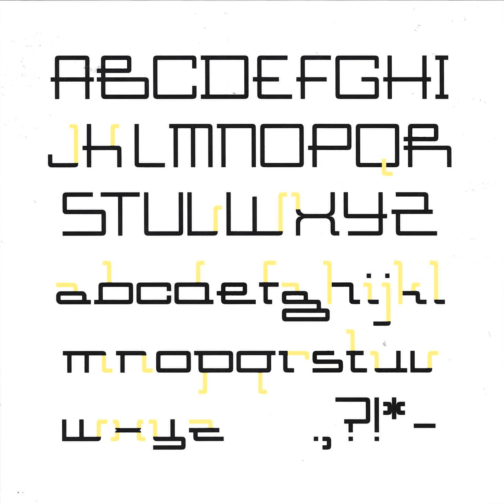
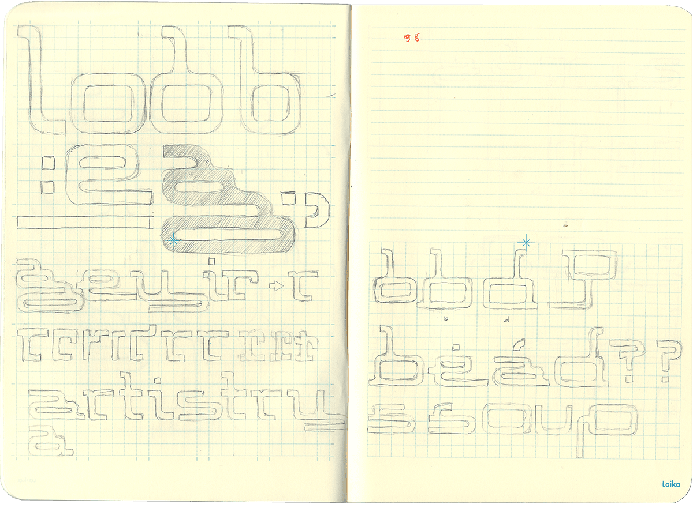
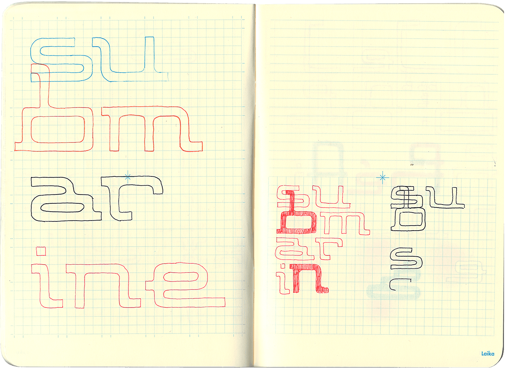
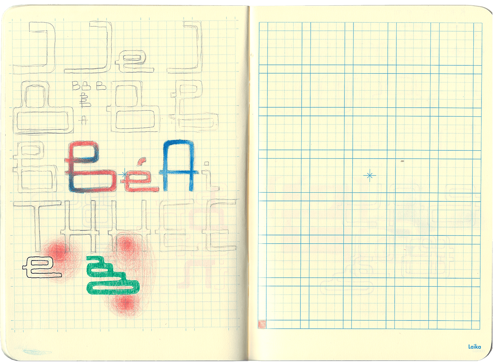
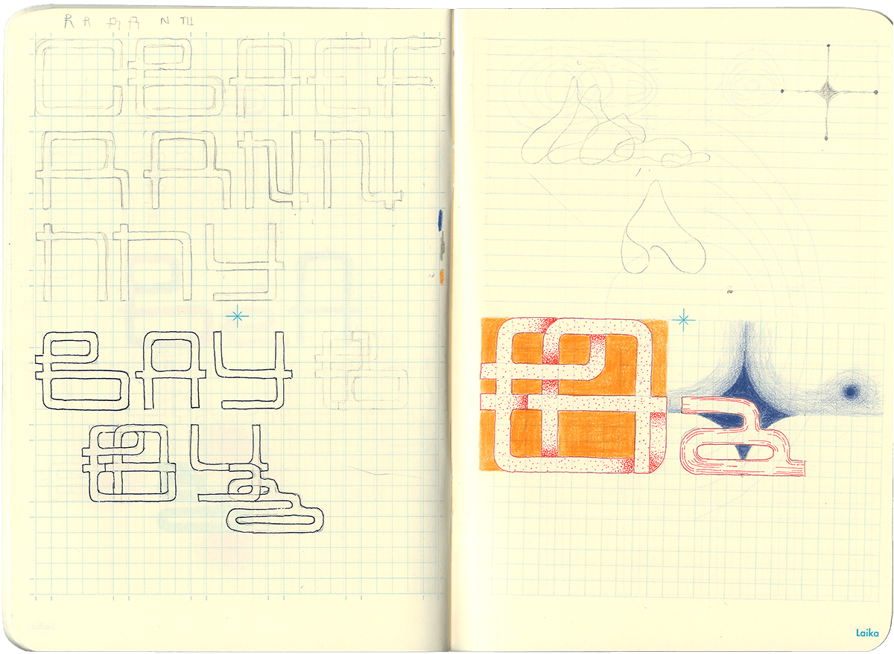

This typeface, characterized by a repeated tail motif inspired by a submarine's periscope, is a geometric sans-serif. Structured on a grid system with uniform line thickness, the typeface was initiated with the unconventional design of the lowercase 'g.' The double story 'g' features the extended tail and loop periscope extensions, emulating two stacked submarines.
This typeface was designed for use in digital and printed media as a bold and experimental display font.







↑
*Years ago a friend of mine had a dream about a strange invention - a staircase you could descend deep underground, in which you heard recordings of all the things anyone had ever said about you, both good and bad. *The catch was, you had to pass through all the worst things people had said before you could get to the highest compliments at the very bottom. *There is no way I would ever make it more than two and a half steps down such a staircase, but I understand its terrible logic - if we want the rewards of being loved we have to submit to the mortifying ordeal of being known.*